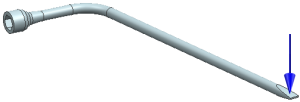
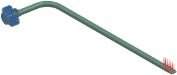
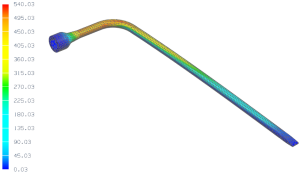

If you are new to NX Advanced Simulation, the following exercise will give you practice in using the Advanced Simulation automated workflow to perform a structural analysis.
Using the SOL 101 Linear Statics - Global Constraints solution sequence, perform a structural analysis of the tire iron simulating when it is used to loosen a lug nut.

|
Property |
Value |
|
Part |
tire_iron.prt |
|
Solution sequence |
SOL 101 Linear Statics - Global Constraints |
|
Idealization |
None |
|
Material |
Steel |
|
Mesh |
CTETRA10 Element size 6 mm |
|
Constraints |
Fix all nodes on internal hex feature |
|
Loads |
Apply a 350 N force as indicated |

A summary of the steps to complete the analysis is listed below.
Open the part file and start Advanced Simulation. Create new FEM and Simulation files.
Define the material and physical properties.
Create a 3D mesh collector.
Create a CTETRA10 mesh with a 6 mm element size. Assign the mesh to the mesh collector created in the previous step.
Make the Simulation the work part.
Apply a fixed translation constraint to nodes on the surface of the internal hex feature by selecting the six polygon faces that form the hex feature.
Apply the 350 N force.
Select the Force command (Loads and Conditions group→ Load Type list).
Select the polygon face where the force is applied.
Enter a magnitude of 350 N.
Select the -ZC vector for the direction.
Select Total per Object as the distribution method.
Solve the model.
To access the analysis results, in the Simulation Navigator, double-click Results. To view a contour plot of element-nodal von Mises stress, in the Post Processing Navigator, expand Solution 1. Next, expand Stress-Element-Nodal and double-click Von-Mises. The resulting contour plot of von Mises stress (in MPa) should look similar to the one shown below.

For your reference, a completed model for this project is located in the ..\projects\solved_project_models folder.